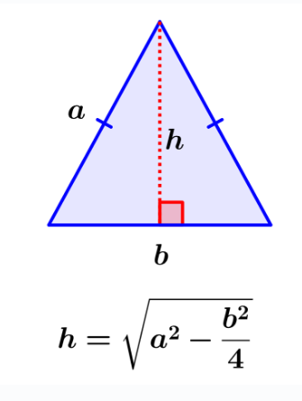
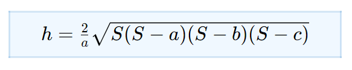
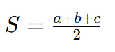

Formulas basicas de Matemática
Cuadrado
Para encontrar el area de un cuadrado se multiplica (lado * lado).
Para encontrar el perimerto del cuadrado se suma todos sus lados o se multiplica (lado * 4).
Triángulo
para encontrar el area del triangulo es igual a (base * haltura) /2.
para entonrar el preimetro del triangulo se suma todos sus lados (lado1 + lado2 + base)
Circulo
Para encontrar el area de un circulo se multiplica (π * radio²).
Para encontrar la circunferencia del circulo se multiplica el (π * diametros).
Altura de un triángulo Isósceles no Equilátero.
Un triangulo Isósceles tiene 2 lados iguales y una base diferente.
Para encontrar la altura de un triangulo isoceles no equilatero se usa la siguiente formula:
Altura de un Triángulo escaleno si conocen todos sus lados
para encontrar la altura de un triangulo escaleno que conocemos todos sus lados usamos la siguiente formula:
a, b, c son las longitudes de los lados del triángulo.
S es el semiperímetro, el cual es igual a:
a es igual a la base del triangulo